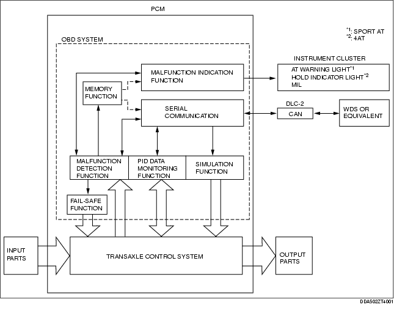

Mazda2
service manual
Search the manual
Home
Technical Guide
Transmission/transaxle
On-board diagnostic [FN4A-EL]
On-board diagnostic (OBD) system block diagram [FN4A-EL]
On-board diagnostic (OBD) system block diagram [FN4A-EL]

Previous
On-board diagnostic (OBD) system outline [FN4A-EL]
Next
Malfunction detection function [FN4A-EL]